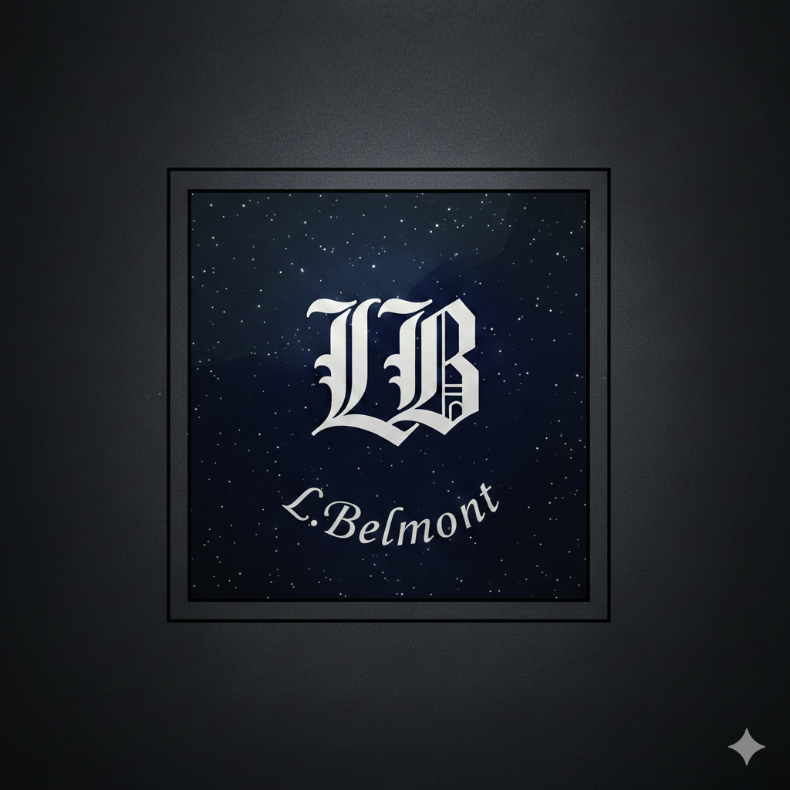

Argentina
Publicado em: 19/09/2025
Vinhedos inesquecivéis, culinária de comer rezando e cultura de tirar o folego, venha conhecer um pouquinho da nossa experiência pela Argentina

Olá, sou Lin Belmont, tenho 30 anos, e moro em Vitória/ES
Contadora de origem, desenvolvedora por paixão e hoje, diretora/gestora de projetos na ARKOS, empresa de tecnologia, especializada em desenvolvimento de software sob medida, criação de sites e plataformas digitais com foco em experiência do usuário e segurança digital.
Esse é o lugar em que vou compartilhar com vocês um pouquinho da minha jornada, minhas rotinas profissionais e pessoais.
Se você gosta de tecnologia, tenta ter uma vida mais saudável e que talvez precisse de um empurrãozinho, esse é o seu lugar seguro.
Instagram Link Github E-mailUma mulher centrada e focada no trabalho. Relativamente introvertida na maioria das vezes, até que se conheça de verdade, então ela mostra um lado mais comunicativo e brincalhão. Prefere ouvir do que falar, gosta de passar tempo com os amigos, mas também preza por momentos calmos e silenciosos em casa.
Hobbies: Ama ler, cozinhar com os amigos, surfar em dias quentes, fazer trilhas e esportes radicais. Pensa em voltar a tocar violão apesar de ter parado a anos. Hoje em dia está em uma fase de jogar vídeogame e tomar tereré.
Resumo profissional + carreira na arkos
Publicado em: 19/09/2025
Vinhedos inesquecivéis, culinária de comer rezando e cultura de tirar o folego, venha conhecer um pouquinho da nossa experiência pela Argentina